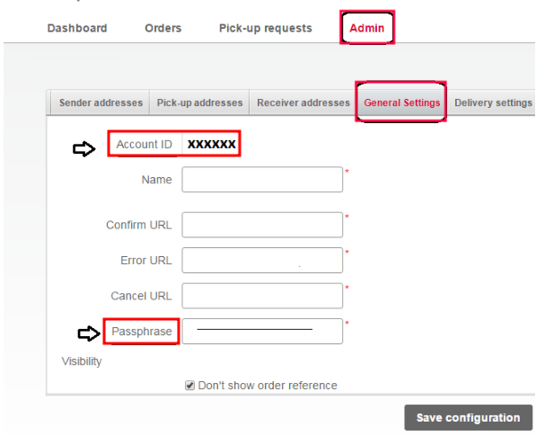

Bpost integration¶
Set up the Bpost shipping connector in Odoo to manage Bpost shipments to clients directly within Odoo. To configure it, complete these steps:
Create a Bpost account.
Get the Account ID and passphrase.
Set up the shipping method in Odoo.
Upon completion, it is possible to calculate the cost of shipping, based on package size and weight, have the charges applied directly to a Bpost business account, and automatically print Bpost tracking labels through Odoo.
Bpost account setup¶
To begin, go to the Bpost website to create, or log into, the company’s Bpost business account. When creating the Bpost account, have the company’s VAT number and mobile phone number ready.
Follow the website’s steps to complete registration, and sign up for shipping services.
After completing the setup, get the Bpost account ID and passphrase, by navigating to the Shipping Manager menu item.
On the Shipping Manager page, go to the Admin tab, then the General Settings tab, to find the Account ID and Passphrase needed to configure Odoo’s shipping method.
Configure Bpost shipping method¶
With those necessary credentials, configure the Bpost shipping method in Odoo by going to .
On the Shipping Methods page, click Create.
In the Provider field, select Bpost from the drop-down menu. Doing so reveals the Bpost Configuration tab at the bottom of the form, where the Bpost credentials can be entered.
For details on configuring the other fields on the shipping method, such as Delivery Product, refer to the Configure third-party carrier documentation.
Note
To generate Bpost shipping labels through Odoo, ensure the Integration Level option is set to Get Rate and Create Shipment.
In the Bpost Configuration tab, complete the following fields:
Bpost Account Number (required field): enter the company’s unique account ID from the Bpost website.
Passphrase (required field): enter the passphrase from the Bpost website.
Bpost Delivery Nature: select either Domestic or International shipping services. Choosing Domestic shows the Options section, while International enables the Bpost Shipment Type and Bpost Parcel Return Instructions fields.
Bpost Package Type: select the type of shipping service from the drop-down menu.
For domestic delivery, the options are: bpack 24h Pro, bpack 24h business, or bpack Bus.
For international delivery, the options are: bpack World Express Pro, bpack World Business, or bpack Europe Business.
Bpost Shipment Type (required field): for international deliveries, declare the type of goods in the package as SAMPLE, GIFT, GOODS, DOCUMENTS, or OTHER.
Bpost Parcel Return Address: return address when an international shipment fails to deliver. Select from the drop-down menu: Destroy, Return to sender by air, or Return to sender by road.
Label Type: choose A6 or A4 label sizes from the drop-down menu.
Label Format: choose PDF or PNG from the drop-down menu.
For domestic deliveries, these features are available in the Options section:
Enable the Delivery on Saturday feature to include Saturdays as possible delivery dates. Depending on the Bpost Package Type selected, this option might incur additional costs to the company.
Enable the Generate Return Label feature to automatically print a return label upon validating the delivery order.